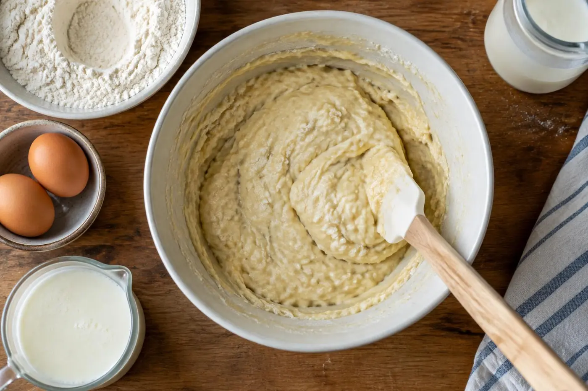
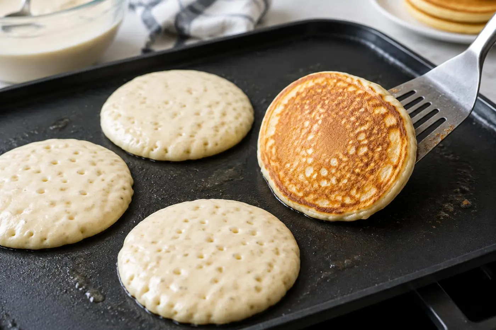

We love these on a slow Saturday with salted butter, warm maple syrup and a bowl of berries on the side. The one thing not to skip is the rest, which gives you a thicker batter and a taller pancake. Resist the urge to stir out the lumps.
The Bored of Toast kitchen ♥Flat, rubbery pancakes almost always come down to one mistake: a smooth batter. This recipe leans into lumps, a short rest and real buttermilk, and the result is a stack that stands tall on the plate and stays soft in the middle, even after a drizzle of syrup.
Here is the chemistry. Buttermilk is acidic, and when it meets baking soda it releases carbon dioxide right away, while baking powder adds a second lift once the batter hits the heat. Resting the batter for 5 to 10 minutes lets the flour fully hydrate and the gluten relax, so the batter thickens and traps those bubbles instead of letting them escape.
Why you'll love it
Double lift, taller stacks
Baking soda and baking powder work together, one in the bowl and one on the griddle.
Tender, never chewy
Minimal mixing keeps gluten in check, so the crumb stays soft and open.
Ready in 30 minutes
The rest happens while the pan heats, so it adds no real time to breakfast.
Ingredients
Tap an ingredient to check it off as you go.
For the batter
For cooking and serving
Cook mode keeps your screen awake while you cook.
Instructions
Tap a step number to mark it as done.
- 1
Whisk the dry ingredients
In a large bowl, whisk the flour, sugar, baking powder, baking soda and salt for about 20 seconds. Break up any small clumps of baking soda you spot, since those leave bitter, soapy pockets in the finished pancakes.
- 2
Whisk the wet ingredients
In a second bowl or a large measuring jug, whisk the buttermilk, eggs and vanilla until smooth and evenly pale. Slowly drizzle in the melted butter while whisking. If cold buttermilk makes the butter firm up into little flecks, that is fine; they melt on the griddle and add pockets of richness.
Tip: Take the buttermilk and eggs out 30 minutes early if you can. Room-temperature liquids keep the butter fluid and give a more even rise. - 3
Fold and rest
Pour the wet ingredients into the dry and fold with a flexible spatula just until no dry streaks of flour remain, about 10 to 12 strokes. The batter should look thick and lumpy. Let it rest for 5 to 10 minutes while the pan heats; you will see small bubbles rise to the surface and the batter will puff slightly.

Tip: Leave the lumps alone. Every extra stir develops gluten, and gluten is what turns pancakes tough, chewy and flat. - 4
Heat the pan properly
Set a large nonstick skillet or griddle over medium heat for 2 to 3 minutes, then brush it lightly with butter or oil. Flick in a drop of water: it should sizzle and skitter across the surface before evaporating. If it just sits there, wait another minute; if it vanishes instantly with a hiss, lower the heat.
- 5
Cook the first side
Scoop 1/3 cup of batter per pancake onto the pan, leaving a couple of inches between them, and nudge each into a round with the back of the cup. Cook for 2 to 3 minutes, until bubbles open and pop on the surface, the edges look matte and set, and the underside is an even golden brown.
- 6
Flip once and finish
Slide a thin spatula underneath and flip in one confident motion. Cook 1 1/2 to 2 minutes more, until the center springs back when lightly pressed. Transfer to a baking sheet in a 200°F (95°C) oven to stay warm, and add a little more butter to the pan before the next batch.

Tip: If the outsides brown before the centers cook through, the pan is too hot. Nudge the heat down a notch; most stoves need a small adjustment after the first batch. - 7
Stack and serve
Stack the pancakes on warm plates and serve right away with maple syrup, a pat of butter and fresh berries or sliced banana. The batter makes about 12 pancakes, or 3 per person.
Tips for success
- Treat the first pancake as a test. Its color and rise tell you whether to adjust the heat or thin the batter with a tablespoon of buttermilk if it spreads too little.
- Do not press the pancakes with your spatula after flipping. It squeezes out the gas bubbles you worked to trap and leaves them dense.
- No buttermilk? Stir 2 tablespoons lemon juice or white vinegar into 2 cups whole milk and let it stand 5 minutes. It will not be as thick, so expect a slightly thinner batter.
Make it your own
Variations
Storage & reheating
Cool leftover pancakes completely, then refrigerate in an airtight container for up to 3 days or freeze in a zip-top bag, separated by parchment, for up to 2 months. Reheat straight from the fridge or freezer in a toaster until hot and crisp at the edges, or warm on a sheet pan in a 350°F (175°C) oven for 8 to 10 minutes. The batter itself does not keep well, since the baking soda loses its lift after about 30 minutes.
Recipe FAQ
Can I make the batter the night before?
Not recommended. The baking soda reacts with the buttermilk right away, so overnight batter bakes up flat. Instead, whisk the dry and wet ingredients separately the night before, refrigerate the wet bowl, and combine in the morning.
Why are my pancakes flat and dense?
Usually the batter was overmixed, or the leaveners are old. Baking powder loses strength after about 6 months; test it by dropping a spoonful into hot water, which should bubble vigorously.
Why are they raw inside but dark outside?
The pan is too hot. Lower the heat to medium-low and give the next batch an extra 30 seconds per side so the centers cook before the surface over-browns.